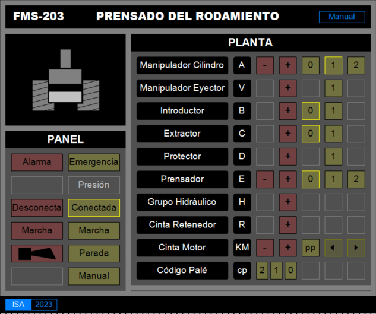

Nivel 1: Manual
-
Objetivos
- Disponer de una interfaz gráfica para controlar manualmente la estación
- Verificar el correcto funcionamiento de cada dispositivo de la estación
- Comprender el funcionamiento de cada dispositivo de la estación
- Comprender el funcionamiento de la estación en su conjunto
- Duración estimada: 1 - 2 sesiones
Guía de resolución

- Crear un nuevo
TwinCAT Project- Nombre:
XXX_TC3_GYYdondeXXXes el grado (AIE,AIM,SR, etc.) yGYYes el número de grupo (G01,G02, etc.)
- Nombre:
- Crear un
PLC Project- Nombre:
FMSXXX_ManualdondeXXXes el número de la estación (201,202, etc.).
- Nombre:
-
Crear un único bloque funcional
- Nombre:
FB_Estacion
- Lenguaje:
SFC
- Variables: Declarar las variables de la tabla de E/S en las imágenes de E y S
- Implementación: No hay código que implementar, se deja por defecto.
- Nombre:
- Crear una instancia del
FB_Estacionen el programaMAINy ejecutar su código.VAR Estacion: FB_Estacion; END_VAR -------------------------------------------------------- Estación();
-
Realizar una visualización para el programa
 Visualización del ejemplo de la FMS203 - Todas las señales deben estar representadas
- Decidir si los botones deben ser Tap o Toggle
{kind=link}
- Compilar el proyecto y comprobar que no tiene errores
-
Si se tiene acceso a la estación
- Buscar la estación en la red y conectarse
- Buscar los terminales de E/S con TwinCAT3
- Renombrar los terminales de E/S según la tabla
- Enlazar las variables del programa con los terminales de E/S
- Activar la configuración en la estación
- Descargar el programa en la estación (Log in)
- Ejecutar el programa (Start)
- Probar el funcionamiento
-
Si no se tiene acceso a la estación
- Activar la configuración en el equipo local
- Descargar el programa en el equipo local (Log in)
- Ejecutar el programa (Start)
- Comprobar que la visualización cambia los valores de las variables correctas
Conocimientos previos
- Creación de proyectos y soluciones
- Creación e instanciación de bloques funcionales
- Declaración de variables
- Creación de visualizaciones
- Búsqueda de terminales de E/S en equipos remotos y enlace de variables con terminales
- Puesta en marcha de un proyecto de TwinCAT3